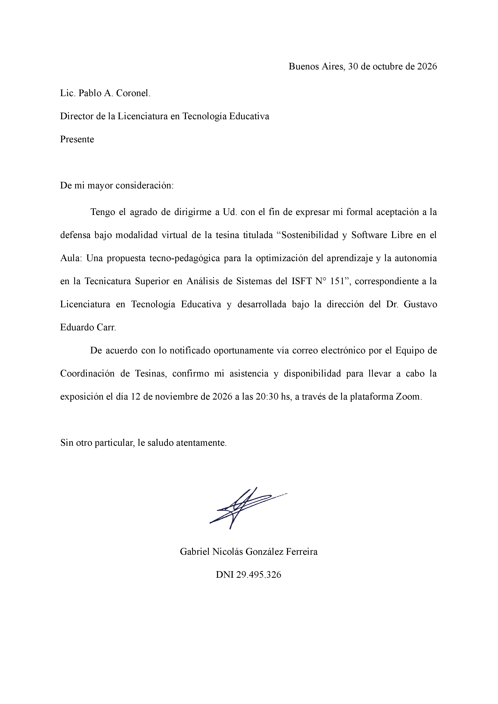
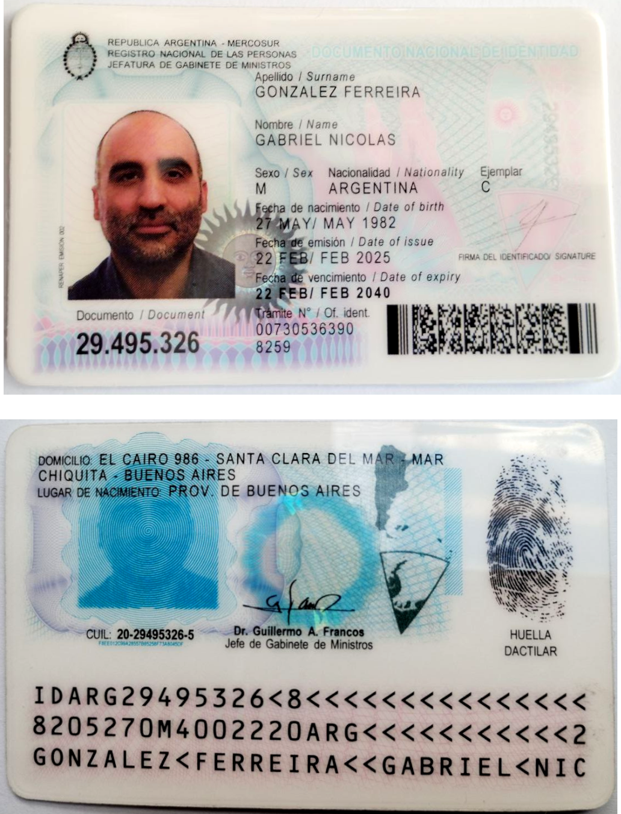
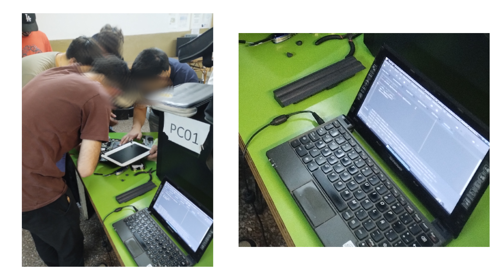
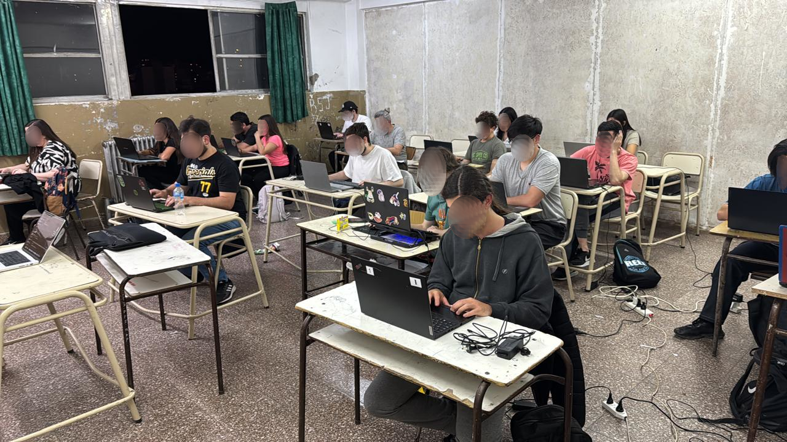

Licenciatura en Tecnología Educativa
Documentación Reglamentaria


Estructura de la Presentación
-
1. Planteo y Roles
El problema, los objetivos y la intervención del Tecnólogo Educativo.
-
2. Marco Teórico
Antecedentes, fricción cognitiva e inclusión digital.
-
3. Metodología
Investigación-Acción (I-A) y acciones desarrolladas en el aula.
-
4. Resultados
Análisis de datos, respuestas a los objetivos y prospectiva.
Planteo del Problema
Fricción Didáctica
Los entornos privativos pesados generan "tiempos muertos" e interrumpen el flujo de atención del estudiante.
Obsolescencia
Imposibilidad técnica de utilizar herramientas modernas en el hardware antiguo disponible en el instituto.
Brecha de Equidad
Desigualdad de condiciones entre estudiantes con equipos modernos y quienes dependen de equipos institucionales limitados.
Objetivo General
"Diseñar, implementar y evaluar una propuesta tecno-pedagógica basada en entornos de Software Libre orientada a optimizar las dinámicas de enseñanza-aprendizaje, la fluidez didáctica y la autonomía estudiantil en la Tecnicatura Superior en Análisis de Sistemas del ISFT N° 151."
Objetivos Específicos
-
1
Diagnosticar las barreras tecno-pedagógicas y el nivel de fricción didáctica que generan los entornos de desarrollo privativos sobre la dinámica de la clase y el trabajo autónomo del estudiantado.
-
2
Diseñar e implementar un entorno de aprendizaje sostenible y transparente (basado en herramientas de Software Libre) como respuesta tecno-pedagógica a las necesidades de la práctica profesionalizante.
-
3
Evaluar el impacto de la intervención tecno-pedagógica sobre la fluidez del tiempo didáctico, la reducción de la carga cognitiva irrelevante y la apropiación autónoma de los recursos por parte de los estudiantes.
El Rol del Tecnólogo Educativo
Integración multidimensional en el proyecto:
-
Asesor
-
Diseñador
-
Capacitador
-
Coordinador
Antecedentes
-
Soberanía y Apropiación
Huayra GNU/Linux como política de Estado y herramienta de apropiación tecnológica.
-
Pedagogía Abierta e Inclusiva
Oportunidad para transformar la práctica docente mediante recursos abiertos, colaborativos e inclusivos.
-
Equidad Digital
Sistemas sin restricciones de licencias para poblaciones vulnerables y fomento de autonomía.
Marco Teórico | Fricción y Didáctica
El Problema: La Fricción
- Carga Cognitiva Irrelevante (Sweller et al., 2011): La "pesadez" del software privativo satura la memoria de trabajo.
- Interrupción atencional y tiempos muertos que desplazan el foco (de aprender lógica a pelear con la máquina).
"[Las tecnologías] no son neutras [...] es fundamental reconocer que cuando las empleamos, ellas nos marcan límites concretos, requieren tiempos y condicionan las experiencias."
(Litwin, 2005)
Marco Teórico | Soberanía y Software Austero
Software Libre
(Stallman, 2004)- ➤ No es una decisión de costos, sino un imperativo ético y pedagógico.
- ➤ Brinda transparencia vs. la "Caja Negra" de entornos privativos (VS Code).
- ➤ Promueve activamente la inclusión digital crítica.
Software Austero
(Mfon-Abasi, 2014)- ➤ Reinterpretado para la Didáctica (Entornos livianos como Geany).
- ➤ Revitaliza hardware obsoleto y evita la marginación del estudiante.
- ➤ Es el catalizador técnico de la Fluidez Didáctica.
Metodología I | Unidad de Análisis y Muestra
Grupo Intervención (GI - n=10)
Hardware antiguo (Plan Conectar Igualdad 2012) + Entorno de Aprendizaje Sostenible (SL).

Grupo Referencia (GR - n=10)
Hardware institucional reciente + Entorno Privativo estándar (Windows + VS Code).

Metodología II | Ciclos de la Investigación-Acción
Enfoque
Mixto
Mixto
-
1. Diagnóstico (Pre-Acción)
Identificación de obstáculos (fricción didáctica) mediante análisis documental y observación.
-
2. Planificación y Diseño
Diseño tecno-pedagógico y validación técnica previa (RAM < 30%) para asegurar la fluidez.
-
3. Implementación (Acción)
Inserción del entorno SL en el aula. El Tecnólogo Educativo facilita y media la apropiación.
-
4. Reflexión y Evaluación
Medición de autonomía y clima con Encuestas Mixtas y Guías de Observación (Cuali).
Acciones Implementadas en el Aula
-
1 Recuperación y Viabilidad (Diagnóstico)
Se rescataron netbooks discontinuadas (2011/2012) validando un umbral de viabilidad técnica (RAM < 30%) para garantizar que el hardware antiguo no sea una barrera.
-
2 Despliegue del Entorno (Acción)
Instalación conjunta del sistema Debian GNU/Linux, ICEWM (entorno de escritorio ultraligero) y Geany (editor libre que expone el proceso de compilación).
-
3 Mediación Pedagógica (Acompañamiento)
Talleres presenciales y virtuales donde los estudiantes pasaron de "sufrir el cambio" a comprender y apropiarse de la filosofía del código abierto.
Resultados I | Fluidez Didáctica
Eliminación de Tiempos Muertos
"El tiempo de espera al programar es corto y NO interrumpe mi trabajo."
Grupo Intervención (SL): 100% Afirmativo
Grupo Referencia (Privativo): 40% Afirmativo
Aumento de Iteración Activa
"La fluidez del sistema me permite probar y experimentar más."
Grupo Intervención (SL): 90% Afirmativo
Grupo Referencia (Privativo): 60% Afirmativo
Resultados II | Autonomía y Apropiación
Comprensión de la "Caja Transparente"
"El entorno de Software Libre me permitió aprender cosas nuevas sobre sistemas."
Autonomía Real (Adopción)
"¿Probarías instalar GNU/Linux en tu propia computadora luego de esta experiencia?"
Conclusiones | Respuesta a los Objetivos Específicos
-
Respuesta al OE 1
Diagnóstico de Fricción
Se comprobó que los entornos privativos pesados generaban una elevada fricción didáctica, tiempos muertos recurrentes e interrupciones en la concentración del alumnado.
-
Respuesta al OE 2
Diseño e Implementación
Se desplegó con éxito un entorno libre, austero y de Caja Transparente sobre hardware recuperado, dando respuesta a las Prácticas Profesionalizantes.
-
Respuesta al OE 3
Evaluación de Impacto
Se evidenció la recuperación de la fluidez didáctica, la reducción de la carga cognitiva irrelevante y la apropiación autónoma (90% de adopción en el hogar).
Líneas Futuras de Investigación
-
Escalabilidad Institucional
Implementar este modelo en la totalidad de la carrera de Análisis de Sistemas.
-
Formación Docente
Capacitar docentes para que administren el ecosistema sin depender del tecnólogo.
-
Dimensión Afectiva
Evaluar cómo la fluidez reduce la ansiedad académica en programadores noveles.
-
Comunidad de Práctica
Creación de un "Club de Software Libre" como práctica de extensión comunitaria.
¡Muchas Gracias!
-
Mentoría -
Formación -
Familia
Anexo 1 - Complemento de Resultados I | Fluidez y Reducción de Fricción
Percepción de Velocidad y Fluidez
"El entorno se siente rápido y fluido."
GI (SL Libre): 90% Positivo
Likert 4-5
GR (Privativo): 70% Positivo
Sin Interrupciones por Espera
"El tiempo de espera es corto y no interrumpe mi trabajo."
GI (SL Libre): 100% Positivo
GR (Privativo): 40% Positivo
Trabajo Sin Frustración Técnica
"El entorno me permite trabajar sin frustraciones."
GI (SL Libre): 90% Positivo
GR (Privativo): 40% Positivo
Anexo 2 - Complemento de Resultados II | Concentración, Iteración y Ayuda
Impacto en Concentración
"La velocidad del entorno impacta en mi concentración."
GI (SL Libre): 60% Acuerdan
GR (Privativo): 30% Acuerdan
Experimentación e Iteración
"La fluidez me permite probar y experimentar más en clase."
GI (SL Libre): 90% Positivo
GR (Privativo): 60% Positivo
Ayuda vs. Obstáculo
"El entorno es una ayuda para mi aprendizaje, no un obstáculo."
GI (SL Libre): 100% Positivo
GR (Privativo): 50% Positivo
Anexo 3 - Complemento de Resultados III | Apropiación y Soberanía
Aporte de Contenidos Nuevos
"El entorno de Software Libre me permitió aprender cosas nuevas."
GI (SL Libre): 90% Positivo
Interés en la Filosofía SL
"¿Te interesó la filosofía?"
Adopción en Hogar
"¿Probarías instalar Linux?"
Anexo: ¿Por qué Geany y no VS Code?
Visual Studio Code (Privativo)
- IDE Pesado basado en Electron.
- Oculta el proceso (Caja Negra).
- Incluye telemetría corporativa.
- Inviable en equipos ≤ 4 GB de RAM.
Geany (Software Libre)
- Consumo en reposo: < 30% RAM.
- Transparencia cognitiva: El alumno ve cómo se compila (scripts).
- Fomenta la soberanía y la apropiación.
Anexo: Validación Técnica
Umbral de viabilidad (Modelo GREENSOFT): Comparativa de hardware restaurado vs. estándar.
Grupo Intervención
Debian+ICEWM
RAM Reposo (Netbook 2011)
< 30%
Tiempo de Respuesta
Inmediato (< 1s)
Grupo Referencia
Win+VSCode
RAM Reposo (Netbook 2023)
> 78%
Tiempo / Latencia
Elevado (> 60s)